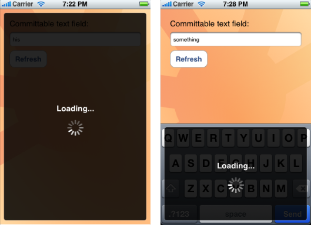

Please note: this article is part of the older "Objective-C era" on Cocoa with Love. I don't keep these articles up-to-date; please be wary of broken code or potentially out-of-date information. Read "A new era for Cocoa with Love" for more.
Showing a "Loading..." message over the iPhone keyboard
The "Text" (SMS) application on the iPhone uses a custom, semi-transparent view to show its "Sending..." message over the keyboard. I'll show you a simple class that can display semi-transparent loading messages and how you can display messages over the keyboard.
Introduction
"Loading..." messages
When waiting for data loaded from the internet, many iPhone applications use a mostly black, semi-transparent view to block the display. Most use a basic "spinner" (UIActivityIndicatorView) to reassure the user that the application is still running, frequently accompanied by "Loading..." text.
Despite the prevalence of this type of loading message, it is not a standard control and must be constructed manually.
Finding the keyboard
Apple give no methods to locate the keyboard or even the current first responder in an iPhone application. I'll show you how you can find both.
The sample application
The sample LoadingView application in this post can display the following two types of loading window:
A full-window loading message and a keyboard-only loading message.
The sample application doesn't actually load anything. The "Refresh" button displays the full-window loading message for 5 seconds and the text field lets you enter some text and hit "Send" to see the keyboard-only loading message for 5 seconds.
Displaying a loading view
A loading view is not the most complicated piece of custom user-interface but there are a handful of common behaviors it should implement so it is a good idea to have a reusable class for the purpose.
The behaviors in my loading view include:
- Always fill the whole view that it blocks (even though it looks inset on all sides for aesthetic reasons).
- Fade in and fade out when added and removed.
- Semi-transparent, allowing the unloaded view to show through.
- Autoresizeable so that a portrait to landscape rotation during loading won't disrupt the display.
- Displays a centered status message and activity indicator.
To ensure that these behaviors are applied to the view on construction, I use a loadingViewInView: method instead of a normal constructor. This method constructs, adds to superview and handles the fade animation all at once.
+ (id)loadingViewInView:(UIView *)aSuperview
{
LoadingView *loadingView =
[[[LoadingView alloc] initWithFrame:[aSuperview bounds]] autorelease];
if (!loadingView)
{
return nil;
}
loadingView.opaque = NO;
loadingView.autoresizingMask =
UIViewAutoresizingFlexibleWidth |
UIViewAutoresizingFlexibleHeight;
[aSuperview addSubview:loadingView];
// Code to create and configure the label and activity view goes here.
// Download the sample project to see it.
// Set up the fade-in animation
CATransition *animation = [CATransition animation];
[animation setType:kCATransitionFade];
[[aSuperview layer] addAnimation:animation forKey:@"layerAnimation"];
return loadingView;
}All that's required to make it look semi-transparent is a custom drawing method.
- (void)drawRect:(CGRect)rect
{
rect.size.height -= 1;
rect.size.width -= 1;
const CGFloat RECT_PADDING = 8.0;
rect = CGRectInset(rect, RECT_PADDING, RECT_PADDING);
const CGFloat ROUND_RECT_CORNER_RADIUS = 5.0;
CGPathRef roundRectPath =
NewPathWithRoundRect(rect, ROUND_RECT_CORNER_RADIUS);
CGContextRef context = UIGraphicsGetCurrentContext();
const CGFloat BACKGROUND_OPACITY = 0.85;
CGContextSetRGBFillColor(context, 0, 0, 0, BACKGROUND_OPACITY);
CGContextAddPath(context, roundRectPath);
CGContextFillPath(context);
const CGFloat STROKE_OPACITY = 0.25;
CGContextSetRGBStrokeColor(context, 1, 1, 1, STROKE_OPACITY);
CGContextAddPath(context, roundRectPath);
CGContextStrokePath(context);
CGPathRelease(roundRectPath);
}Round Rects are Everywhere!
I continue to find it strange that Apple don't provide a function to draw a round rectangle in one line. They do provide the (more flexible) CGPathAddArcToPoint function but it lacks the simplicity of a single line function to handle the common case. Download the project and see how the implementation of NewPathWithRoundRect creates round rects using the CGPathAddArcToPoint function if you don't know how to draw round rects on the iPhone.
The absence of a round rectangle function is particularly strange given the anecdote that Andy Hertzfeld relates on folklore.org and in his excellent book Revolution in the Valley. In this anecdote, Steve Jobs drags Bill Atkinson on a walk around the block with Steve pointing out how everything is made of round rects until Bill relents and agrees to put the RoundRect function into Quickdraw.
Round rectangles continue to be everywhere on the iPhone — maybe more so than on the Mac in 1984. It's a good idea to use a function like NewPathWithRoundRect in your own code.
Finding the keyboard
The keyboard on the iPhone is an instance of UIKeyboard (a private class) in its own UIWindow (actually, it may share the window with the UIAutoCorrectInlineView).
You can find the UIKeyboard with a simple search.
@implementation UIApplication (KeyboardView)
- (UIView *)keyboardView
{
NSArray *windows = [self windows];
for (UIWindow *window in [windows reverseObjectEnumerator])
{
for (UIView *view in [window subviews])
{
if (!strcmp(object_getClassName(view), "UIKeyboard"))
{
return view;
}
}
}
return nil;
}
@endThe keyboard itself is a series of nested views which eventually reach the underlying functionality for the keys:
UIKeyboardUIKeyboardImplUIKeyboardLayoutQWERTYUIKeyboardSublayoutUIImageViewUIKeyboardSpaceKeyViewUIKeyboardReturnKeyView
Interestingly, the keys for the main part of the keyboard are all a single image. This arrangement probably explains why the "space" and "return" keys behave more like regular buttons than the other keys.
For the sample application, since the implementation of LoadingView will size the loading view to cover its immediate superview, passing the keyboard view fetched in this manner will create the keyboard-only loading view shown above.
If you wanted to show a full-window LoadingView that also covers the keyboard, you could pass the keyboard view's superview to the loadingViewInView: but you might want to add an extra 20 pixels padding at the top in this case, since the superview (the window) extends underneath the status bar at the top of the window.
Finding the firstResponder
While it isn't required for the sample project, I thought I'd mention how to fetch a related piece of information: the firstResponder in an iPhone application.
On the iPhone firstResponder is the view which has the current keyboard focus (or nil if no view is focussed).
This is an important piece of information, so it's strange that Apple didn't choose to provide a public method to access it. Curiously, there is a method, firstResponder, on UIWindow which returns this value but it isn't public. This will work:
UIView *firstResponder =
[[UIApplication sharedApplication]
keyWindow]
performSelector:@selector(firstResponder)];Conclusion
You can see all this code and more in the sample project for this post: LoadingView.zip (129kB)
Displaying a loading view is not a very difficult task (lots of people write their own) but implementing all of the different expected behaviors is time consuming — the implementation in this post is at least 65 lines of code, depending on how you count it — so keeping a resusable implementation can save a lot of time.
Finding the keyboard and finding the current first responder on the iPhone are harder to work out since the API is hidden, and it requires a little investigative work.
Putting it all together, you could easily recreate Apple's "Sending..." progress view used in the Text program.
8 Confusing Objective-C Warnings and Errors